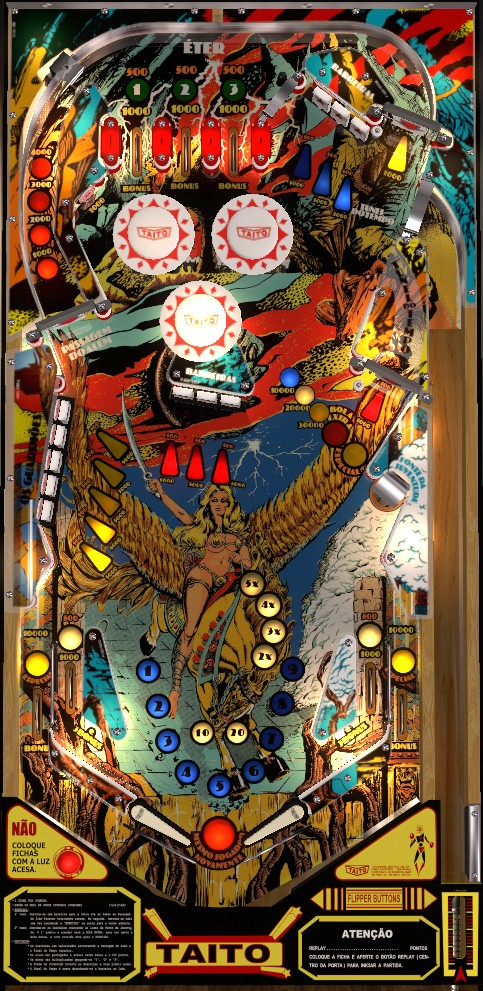

This game has the same playfield layout as Blackout (Williams, 1980), but different rules and scoring.
In this game, knocking down all but one of the drop targets in a bank counts as completing that bank and resets it. Completing both the center and top right banks advances the value of the spinner in the left orbit. Do this exactly 3 times to max out the left spinner value at 4,000 per spin, then shoot it all day. Doing so a 4th time lights Special on the out lanes, but resets the spinner value at the end of the ball. Unless the spinner is very poorly maintained, nothing else compares for scoring. Completing the left drop targets advances the right saucer toward awards of 30,000 points, extra ball, or Special.
The below picture of Vortex's playfield was taken from the VPX recreation by JPSalas et al.

Top lanes score 1,000 points and a bonus advance when lit, or 500 and a bonus advance when not lit. Make a lit lane to unlight it. Flipper lane change is available on the right flipper only for rotating which top lanes are lit. Unlighting all 3 top lanes resets them and increases the bonus multiplier by 1, up to a maximum of 5x. Unlighting a lane also lights one pop bumper; bumpers score 100 points, or 500 when lit.
For the center and upper right banks of drop targets, hitting any 2 targets in the bank counts as completing the bank and resets it. Exactly one target in each bank is lit at any given time. Lit targets score 5,000 points and a bonus advance, while unlit targets score 500 points and a bonus advance. Each spin of the middle-right spinner rotates which target in the center bank is lit, and each spin of the upper-right spinner rotates which target in the top right bank is lit.
Both right spinners score 100 points per spin when not lit. Completing the center bank of drop targets lights the middle-right spinner for 1,000 points per spin. Completing the top right bank of drop targets lights the upper-right spinner for 1,000 points per spin. These two spinners cannot both be lit at the same time, so lighting one will unlight the other.
The value of the left spinner starts at 1,000 points per spin. Completing both the center and top right banks of drop targets adds 1,000 to this value, up to a maximum of 4,000 points per spin. Completing both the center and top right target banks again when the left spinner is at 4,000 lights both out lanes for a Special. The value of the left spinner is preserved from ball to ball, unless the Special is lit, in which case it will reset to its base value of 1,000 per spin at the start of the next ball. This left spinner is rather dominating as far as a strictly score-based strategy is concerned.
Each drop target down in the left bank scores 500 points and a bonus advance, or 5,000 and a bonus advance when lit. In lanes score 500 points and 1 bonus advance, or 5,000 and 3 bonus advances when lit. Making a "full orbit shot" that goes up the left spinner, across the top of the game, and down the upper right spinner lights all 5 left drop targets and both in lanes. Hitting a lit left drop target or making a lit in lane unlights it.
Hitting any 4 targets in the left bank counts as completing the bank and resets it. Each completion of the left bank advances the value of the right saucer in the sequence 10,000 - 20,000 - 30,000 - extra ball - Special. Point values can be collected from the right saucer repeatedly, but collecting an extra ball or Special completely unlights the saucer. When completely unlit, the saucer scores only 1,000 points, and completing the left drop targets once increases the saucer value to 10,000. Collecting an extra ball or Special from the saucer scores only 1,000 points, even though the 30,000 light remains lit. The value lit at the saucer is preserved from ball to ball. Maximum 1 extra ball per ball in play.
Vortex has a conventional in/out lane setup. In lanes score 500 points and a bonus advance when not lit, or 1,000 and 3 bonus advances when lit. Both in lanes are lit by making a full orbit shot through the left spinner, and are unlit by rolling through them when they are lit. Out lanes score 10,000 points and a bonus advance, or 1,000 plus a Special when lit; they are lit by advancing the value of the left spinner past 4,000 points through completions of both the center and upper right drop target banks. Slingshots score exactly 3 points (that's not a typo: it's 3, not 10 or 30).
Bonus is advanced by top lanes, any drop target, unlit in lanes, any out lane, and the 1,000 point standup target near the pop bumpers. Lit in lanes award 3 bonus advances. Bonus multiplier is increased by completing the three top lanes. Max bonus is 5x 29,000 = 145,000 points. There is no bonus holdover or mid-ball bonus collect of any kind.
I am not aware of a point value that can be assigned to extra balls or Specials for competition/novelty play.